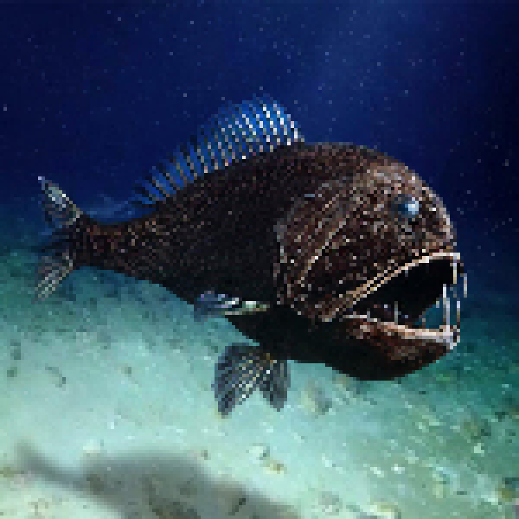

Peixe ogro
Apesar de medir apenas cerca de 15 a 18 centímetros, o peixe-ogro possui os maiores dentes em proporção ao tamanho do corpo entre todos os peixes conhecidos. Sua aparência intimidadora faz parecer um verdadeiro monstro das profundezas. Curiosidades: Vive entre 500 e 5.000 metros de profundidade. Seus dentes são tão grandes que existem cavidades especiais na cabeça para acomodá-los quando fecha a boca. Alimenta-se de peixes, lulas e crustáceos. É encontrado em praticamente todos os oceanos do mundo.
